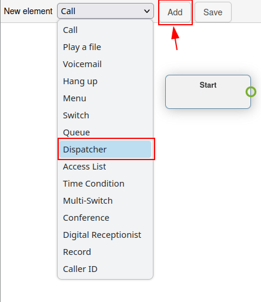
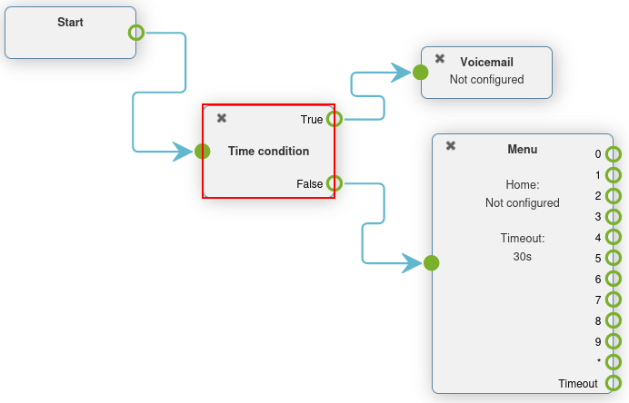

Planes de marcado avanzados¶
Las empresas reciben muchas llamadas entrantes cada día, pero muchas no quieren que sus equipos estén respondiendo llamadas las 24 horas del día los 7 días de la semana.
Al utilizar las funciones avanzadas de plan de marcación de Axivox, el proceso puede automatizarse y el enrutamiento puede configurarse para todos los escenarios. De esta manera, los clientes nunca se quedan esperando, o frustrados, porque no pueden ponerse en contacto con nadie.
Utilizando los elementos avanzados de los planes de marcación, las empresas pueden automatizar el enrutamiento de llamadas para determinados días u horas, como las vacaciones de la empresa. Las empresas también pueden permitir que las personas que llaman introduzcan ellas mismas las extensiones y sean transferidas automáticamente mediante una recepcionista digital. De este modo, no es necesario que un equipo administrativo esté disponible las 24 horas del día.
Incluso hay una opción para enrutar a las personas que llaman según la perte del mundo de la que estén llamando y maximizando la eficacia
Importante
Consulte Información básica de los planes de marcación para obtener más información sobre planes de marcación básicos y cómo agregar elementos.
Advertencia
El uso de un complemento del navegador para la ortografía puede dificultar el uso del editor visual en los planes de marcación. No utilice un traductor con la consola de gestión de Axivox.
Elementos avanzados¶
En los planes de marcación de Axivox (como se describe en Información básica de los planes de marcación) hay dos elementos avanzados que se pueden usar.
Record (registro): la función de registro está activada (requiere un cambio de plan, que se activa en los ajustes de Axivox).
Caller ID (identificación de la persona que llama): reemplaza la identificación de la persona que llama con el número al que se llamó o un texto libre.
Para agregar uno de estos elementos, vaya a la página planes de marcación ubicado en el menú del lado izquierdo de la consola de gestión Axivox.
Después haga clic en el botón Visual Editor (editor visual) a la derecha del plan de marcación deseado para editarlo. Finalmente, abra el menú desplegable New element (nuevo elemento), seleccione un elemento y haga clic en agregar.
Para obtener más información consulte Planes de marcación.
Importante
El elemento Record (grabar) graba las llamadas que se enrutan con este elemento y requiere de un cambio de plan adicional en Axivox.
Para activar las grabaciones en Axivox vaya a Ajustes en la consola de gestión Axivox. Despiés, vaya al menú desplegable Recording (grabar) que se encuentra en la parte inferior de la página. Desde aquí, seleccione Enabled (activado) desde el menú desplegable para activar la grabación con el elemento Record del plan de marcación.
Truco
Si el menú desplegable grabación no está disponible y no se puede cambiar, póngase en contacto con Axivox para activar esta función.
El elemento Caller ID permite la sustitución del identificador de la persona que llama en sentido descendente, tras el enrutamiento
Al añadir el elemento Caller ID al plan de marcación, y hacer doble clic sobre él para configurarlo, aparecen dos opciones.
La primera es un campo Free text (texto libre), en el que se puede introducir cualquier texto para sustituir el identificador de llamada. La segunda opción es Replace the caller ID by the called number (reemplazar el identificador de la persona que llama con el número al que se llamó). Esta opción sustituye el ID de la persona que llama por el Número entrante.
Truco
Es posible que una empresa desee utilizar el elemento Caller ID (identificador de llamada) para sustituir al Incoming number (número entrante), de modo que los empleados, o las transferencias externas, no puedan ver el número y la información se mantenga privada.
Elementos básicos de enrutamiento¶
Los elementos básicos de enrutamiento en los planes de marcación Axivox proporcionan enrutamiento basado en extensiones. Esto puede hacerse añadiendo un Menú para vincular numéricamente la marcación por números a una acción, o utilizando un asistente digital para enrutar o escuchar automáticamente una extensión, basándose en una entrada clave de la persona que llama.
La diferencia principal es que el asistente virtual no se tiene que preconfigurar de forma numérica con acciones. En su lugar, actúa como un recepcionista virtual
Menú: añade un directorio de marcación por número y acciones posteriores configuradas (sin terminal). Por ejemplo, una función de marcación por número podría incluir un elemento en el que, al hacer clic en «2», la persona que llama accede al elemento vinculado a «2» en el elemento Menú del plan de marcación.
Asistente virtual: adjuntar un operador virtual que escuche para las extensiones.
Para agregar uno de estos elementos vaya a la página Planes de marcación ubicada en el menú en el lado izquierdo de la consola de gestión Axivox. Después, haga clic en el botón Editor visual ubicado a la derecha del plan de marcación para editar el plan. Después abra el menú desplegable de Eelemento nuevo, seleccione un elemento y haga clic en Agregar.
Para obtener más información consulte Planes de marcación.
Ejemplo de un escenario con un asistente virtual¶
El elemento Asistente virtual es una función de escucha que enruta a las personas que llaman de manera correcta a través del plan de marcación según la extensión que ingresen en el teclado.
Configure un asistente virtual para eliminar la necesidad de un equipo o un asistente real al que le llamen a tiempo. Con este elemento, las llamadas ahora llegarán a su destino sin que una persona real se interponga.
Después de agregar un elemento de Asistente virtual al plan de marcación, conecte los puntos finales apropiados y haga doble clic en el elemento para configurar un Límite de tiempo en la ventana emergente de :guilabel:`recepcionista que aparece.
El límite de tiempo se puede configurar con un incremento de 5 segundos, comenzando en 5 y terminando en 60 segundos.
Importante
El elemento Digital Receptionist (asistente virtual) requiere un elemento Play a file (reproducir un archivo) a cada lado del mismo, para explicar qué acción realizar y cuándo se introduce una extensión incorrecta.
Example
Al personalizar un plan de marcación en una ventana emergente Dialplan Editor (editor del plan de marcación), añada un elemento Menu (menú), con un mensaje de Greeting (saludo) que podría decir, Press star to dial an extension (presione iniciar para marcar a una extensión).
Después en el elemento Menú para la opción * (estrella) vincule un elemento Reproducir un archivo que reproduzca un mensaje de audio que diga “Escriba la extensión de la persona con la que se quiere comunicar”.
Después del primer elemento Play a file (reproducir un archivo), agregue el elemento Digital Receptionist (asistente virtual) seguido de otro elemento Play a file (reproducir un archivo) que diga “Esta extensión no es válida”.
Este último elemento se usa para cerrar el flujo, si es que la persona que llama no ingresa la extensión correcta.
Finalmente, este último elemento Play a file (reproducir un archivo) regresará al elemento Menu.

Importante
Los elementos del plan de marcación pueden configurarse haciendo doble clic en ellos, y seleccionándoles diferentes características de la consola Axivox.
Por ejemplo, es necesario crear un Mensaje de audio y, a continuación, seleccionarlo en un elemento Reproducir un archivo o Menú.
Para obtener más información, consulte la siguiente documentación: Mensajes de audio.
Elementos de enrutamiento avanzados¶
Los elementos avanzados de enrutamiento dirigen las llamadas automáticamente a medida que se reciben al número o números entrantes. Esto puede configurarse mediante variables de geolocalización, listas de aprobaciones o temporales. Las llamadas pasan a través de un filtro antes de su destino final, y son enrutadas, basándose en la(s) variable(s) establecida(s).
Los siguientes son elementos de enrutamiento avanzados:
Dispatcher (operador): cree un filtro de llamadas para enrutar el tráfico según la geolocalización de la persona que llama.
Access List (lista de acceso): crear una lista de acceso personalizada, con una preferencia de usuario VIP.
Time Condition (condición de tiempo): crear condiciones horarias para encaminar el tráfico entrante en días festivos u otras franjas horarias sensibles.
Truco
La lista de aprobación es un término técnico que se usa para crear una lista de números permitidos. Por otro lado, la lista de exclusión se usa para crear una lista de números rechazados
Para agregar uno de estos elementos vaya a la página Planes de marcación ubicada en el menú en el lado izquierdo de la consola de gestión Axivox. Después, haga clic en el botón Editor visual ubicado a la derecha del plan de marcación para editar el plan. Después abra el menú desplegable de Eelemento nuevo, seleccione un elemento y haga clic en Agregar. Para más información vaya a Planes de marcación.
Ejemplo de operador¶
Un elemento Dispatcher (operador) es una función del plan de marcación que dirige las llamadas en función de la región o la geolocalización. En la mayoría de los casos, el elemento Dispatcher (operador) de un plan de marcación está vinculado al elemento Start (iniciar), con el fin de filtrar o filtrar las llamadas a medida que entran en un número entrante.
Haga doble clic en el elemento Dispatcher (operador) de la ventana emergente Dialplan Editor (editor del plan de marcación) para configurarlo.
Este elemento comprueba los números (enrutados a través de este elemento), de acuerdo con expresiones regulares. Para añadir una expresión regular, haga clic en Add a line (agregar una línea) en la parte inferior de la ventana emergente Dispatcher (operador).
A continuación, en Name (nombre), introduzca un nombre reconocible para identificar esta expresión. Este es el nombre que aparece en el elemento Dispatcher (operador) del plan de marcación mostrado en la ventana emergente Dialplan Editor (editor del plan de marcación).
En el campo Expresión regular, introduzca el código de país, o código de área, que Axivox debe enrutar para las llamadas entrantes. Esto es especialmente útil cuando una empresa desea filtrar sus clientes a ciertas colas, o usuarios en función de la geolocalización del cliente.
Para especificar todos los números con un código de país específico, o un código de zona, incluya d+ después del código del país o el código de país + código de área.

Example
02\d+: valida los números que empiezan con02.00\d+: valida todos los números que empiezan con00.0052\d+valida todos los números que empiecen con0052(código de país de México)001716\d+: valida todos los números que empiecen con001716(código de país de los Estados Unidos + código del área del oeste de Nueva York)
Truco
Una expresión regular (abreviada «regex» o «regexp»), también conocida como «expresión racional», es una secuencia de caracteres que especifica un patrón de coincidencia en un texto. En otras palabras, se realiza una coincidencia dentro del rango de números dado.
Cuando se hayan completado las configuraciones deseadas en la ventana emergente Dispatcher (operador), asegúrese de hacer clic en Save (guardar).
Al hacerlo, aparecerá el elemento Dispatcher (operador) con diferentes rutas disponibles para su configuración, según las Regular Expressions (expresiones regulares) que se configuraron.
Adjunte estas rutas a cualquier elemento nuevo en la ventana emergente de Dialplan Editor (editor del plan de marcación).
Hay una ruta desconocida de forma predeterminada que aparece en el elemento Operador luego de configurar al menos una expresión regular.
Las llamadas seguirán esta ruta cuando los números no coincidan con cualquier expresión regular configurado en el elemento Dispatcher (operador),

Escenario con una condición de tiempo¶
Cuando un elemento de Time Condition (condición de tiempo) se agrega al plan de marcación, tiene un enrutamiento True y False (verdadero y falso) simple.
Después de agregar el elemento Time Condition (condición de tiempo) al plan de marcación, haga doble clic para configurar las variables. Puede configurar Hour/Minute (horas y minutos), Days of the week (días de la semana), Day of the month (día del mes) y Month (mes).
Si el tiempo en el que la persona que llama se pone en contacto con el número entrante es el mismo que las condiciones de tiempo configuradas, entonces se sigue la ruta True (verdadera), de lo contrario se sigue la ruta False (falsa).
Example
Para una empresa que todos los años cierra en el día de independencia de los Estados Unidos (4 de julio) se deben configurar las siguientes condiciones de tiempo:
Hora/Minuto -
0:0 to 23:59Día de la semana -
All to AllDía del mes -
From 4 to 4Mes -
July
El elemento Time Condition (condición de tiempo) es muy util sobre todo en los días de asueto, los fines de semana y horas de trabajo configuradas. Cuando una persona que llama llega al destino donde se les puede ayudar, ya sea con una persona o un correo de voz, esto reduce el tiempo desperdiciado y los cuelgues.
Importante
Para configurar la Timezone (zona horaria) en la que funciona la Time Condition (condición de tiempo) vaya a la consola de gestión de Axivox y haga clic en Ajustes en el menú de la izquierda. Después, configure la Timezone (zona horaria) con el segundo campo empezando desde abajo, solo haga clic en el menú desplegable.
Escenario de lista de acceso¶
Un elemento de Access list (lista de acceso) en el plan de marcación permite el enrutamiento de algunos números y desactiva (niega) otros números.
Después de agregar un elemento de Lista de acceso solo tiene que hacer doble clic en el elemento directamente en la ventana emergente de Dialplan Editor (editor del plan de marcación).
Aparecen dos campos donde puede agregar de forma manual las expresiones regulares, estos son Allow (permitir) y Deny (bloquear) que salen en la ventana emergente Access List (lista de acceso).
Example
Para un cliente muy importante, puede configurar su número en el campo Allow (permitir) y estas personas que llaman pueden ir directamente a la gestión.
Truco
Una expresión regular (abreviada «regex» o «regexp»), también conocida como «expresión racional», es una secuencia de caracteres que especifica un patrón de coincidencia en un texto.
Example
2\d\d: valida los números del200 al 299.02\d*: valida todos los números que empiezan con02.0017165551212: valida el número (0017165551212).
Después de configurar los campos Allow (permitir) y Deny (bloquear) con expresiones regulares o números, haga clic en Save (guardar) en la ventana emergente Lista de acceso.
Después, en el elemento Access list (lista de acceso) del plan de marcación hay tres rutas disponibles para vincular más acciones.
Las llamadas desconocidas pueden enrutarse a través del flujo de menú normal añadiendo un elemento Menu (menú) y conectándolo a la ruta Unknown (desconocido). Las llamadas Refused (rechazadas) pueden enrutarse al elemento Hang up (colgar). Por último, las llamadas Authorized (autorizado) pueden enviarse a una extensión o cola específica.

Switches¶
Un elemento switch en Axivox es una acción de ruta simple que se puede activar o desactivar.
Estos se pueden activar o elegir sin problemas, lo que permite hacer cambios rápidos en el enrutamiento sin alterar el plan de marcación.
Se puede configurar rutas alternas para que se pueda cambiar a estas de inmediato. Esto puede ser para obtener una nueva disponibilidad, o ajustar el flujo de tráfico por cualquier motivo.
Axivox permite un switch simple de prendido/apagado y un switch múltiple, con el que puede seleccionar diferentes rutas.
Switch: un control manual de prendido/apagado que puede desviar el tráfico de llamadas, según si se abrió (prendido) o cerró (apagado).
Multi-Switch: un mecanismo para crear rutas, apagarlas y prenderlas y desviar a las llamadas entrantes.
Switch básico¶
Puede configurar un Switch desde la consola de gestión Axivox desde el botón Switches en la izquierda del menú. Para crear un switch nuevo haga clic en Add a switch (agregar un switch) desde el tablero de Switches, póngale un Nombre y haga clic en Guardar.
Después, cambie el switch que quiera a On (prendido) u Off (apagado) en el tablero Switches.
Este estado On (prendido) u Off (apagado) automáticamente enruta el tráfico a un plan de marcación en el que se configura este switch.
El tráfico se dirige a la ruta Active (activa) cuando se activa On (prendido) en el switch. El tráfico de llamadas se dirige a la ruta Inactive (inactiva) cuando se activa Off (apagado) en el conmutador.
Puede hacer cambios al instante, solo asegúrese de hacer clic en Aplicar cambios para poder implementarlos.
Agregar un switch a un plan de marcación¶
Para agregar un Switch a un plan de marcación, vaya a la consola de gestión de Axivox, y haga clic en planes de marcación en el menú izquierdo. Después haga clic en Editor visual que se encuentra a un lado del plan de marcación deseado para abrir la ventana emergente de Edición del plan de marcación.
Después, desde el menú desplegable Nuevo elemento seleccione Switch y después haga clic en Add (agregar). Haga doble clic en el elemento para hacer más configuraciones en el elemento Switch.

Multi-switch¶
El elemento multi-switch de Axivox es un switch donde hay varias rutas que se pueden configurar y entre las que se puede cambiar.
Para configurar y establecer un elemento Multi-Switch, vaya a la consola de gestión de Axivox. Después, haga clic en el elemento de menú Switches en el menú izquierdo.
Cambie a la pestaña Multi-switch para crear, o establecer, un elemento Multi-switch preconfigurado.
Para crear un Multi-switch nuevo, haga clic en Crear nuevo. Después, ingrese un Nombre para el elemento y después ingrese la Opción disponible. Ingrese una Opción disponible por línea y no duplique los registros.
Recuerde hacer clic en guardar cuando termine.
Para seleccionar el Estado del Multi-Switch, haga clic en el menú desplegable a un lado de la palabra Multi-Switch, en la pestaña Multi-Switch del tablero Switches.
El State (estado) seleccionado es la ruta que se sigue en el plan de marcación. El State (estado) se puede editar en el momento, solo asegúrese de de hacer clic en Apply changes (aplicar cambios).
Agregar multi-switch al plan de marcación¶
Para agregar un elemento Multi-Switch al plan de marcación, vaya a la consola de gestión de Axivox y después haga clic en Dial plans (planes de marcación) en el menú izquierdo.
Después, seleccione o cree un plan de marcación. Haga clic en Editor visual en el plan de marcación deseado.
En la ventana emergente de Dialplan Editor (editor del plan de marcación), haga clic en el menú desplegable Dialplan Editor (nuevo elemento) y después seleccione Multi-Switch. Después, haga clic en Add (agregar). Haga doble clic en el elemento para hacer más configuraciones del elemento Switch.